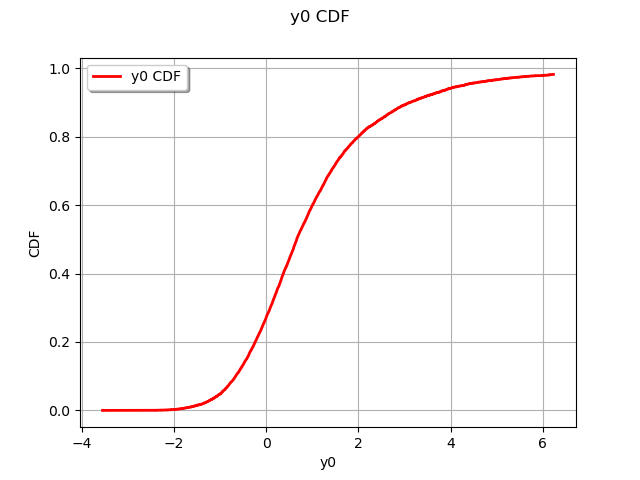

Note
Go to the end to download the full example code
Estimate Wilks and empirical quantile¶
In this example we want to evaluate a particular quantile, with the empirical estimator or the Wilks one, from a sample of a random variable.
Let us suppose we want to estimate the quantile  of order
of order  of the variable
of the variable  :
:
 , from the sample
, from the sample  of size
of size  , with a confidence level equal to
, with a confidence level equal to  .
.
We note  the sample where the values are sorted in ascending order.
The empirical estimator, noted
the sample where the values are sorted in ascending order.
The empirical estimator, noted  , and its confidence interval, is defined by the expressions:
, and its confidence interval, is defined by the expressions:
![\left\{
\begin{array}{lcl}
q_{\alpha}^{emp} & = & Y^{(E[n\alpha])} \\
P(q_{\alpha} \in [Y^{(i_n)}, Y^{(j_n)}]) & = & \beta \\
i_n & = & E[n\alpha - a_{\alpha}\sqrt{n\alpha(1-\alpha)}] \\
i_n & = & E[n\alpha + a_{\alpha}\sqrt{n\alpha(1-\alpha)}]
\end{array}
\right\}]()
The Wilks estimator, noted  , and its confidence interval, is defined by the expressions:
, and its confidence interval, is defined by the expressions:
![\left\{
\begin{array}{lcl}
q_{\alpha, \beta}^{Wilks} & = & Y^{(n-i)} \\
P(q_{\alpha} \leq q_{\alpha, \beta}^{Wilks}) & \geq & \beta \\
i\geq 0 \, \, / \, \, n \geq N_{Wilks}(\alpha, \beta,i)
\end{array}
\right\}]()
Once the order  has been chosen, the Wilks number
has been chosen, the Wilks number  is evaluated,
thanks to the static method
is evaluated,
thanks to the static method ![ComputeSampleSize(\alpha, \beta, i)]() of the Wilks object.
of the Wilks object.
In the example, we want to evaluate a quantile  ,
with a confidence level of
,
with a confidence level of  thanks to the
thanks to the ![4`th maximum of
the ordered sample (associated to the order :math:`i = 3]() ).
).
Be careful:  means that the Wilks estimator is the maximum of the sample:
it corresponds to the first maximum of the sample.
means that the Wilks estimator is the maximum of the sample:
it corresponds to the first maximum of the sample.
import openturns as ot
import math as m
import openturns.viewer as viewer
ot.Log.Show(ot.Log.NONE)
model = ot.SymbolicFunction(["x1", "x2"], ["x1^2+x2"])
R = ot.CorrelationMatrix(2)
R[0, 1] = -0.6
inputDist = ot.Normal([0.0, 0.0], R)
inputDist.setDescription(["X1", "X2"])
inputVector = ot.RandomVector(inputDist)
# Create the output random vector Y=model(X)
output = ot.CompositeRandomVector(model, inputVector)
Quantile level
alpha = 0.95
# Confidence level of the estimation
beta = 0.90
Get a sample of the variable
N = 10 ** 4
sample = output.getSample(N)
graph = ot.UserDefined(sample).drawCDF()
view = viewer.View(graph)

Empirical Quantile Estimator
empiricalQuantile = sample.computeQuantile(alpha)
# Get the indices of the confidence interval bounds
aAlpha = ot.Normal(1).computeQuantile((1.0 + beta) / 2.0)[0]
min_i = int(N * alpha - aAlpha * m.sqrt(N * alpha * (1.0 - alpha)))
max_i = int(N * alpha + aAlpha * m.sqrt(N * alpha * (1.0 - alpha)))
# print(min_i, max_i)
# Get the sorted sample
sortedSample = sample.sort()
# Get the Confidence interval of the Empirical Quantile Estimator [infQuantile, supQuantile]
infQuantile = sortedSample[min_i - 1]
supQuantile = sortedSample[max_i - 1]
print(infQuantile, empiricalQuantile, supQuantile)
[4.13903] [4.28037] [4.35925]
Wilks number
i = N - (min_i + max_i) // 2 # compute wilks with the same sample size
wilksNumber = ot.Wilks.ComputeSampleSize(alpha, beta, i)
print("wilksNumber =", wilksNumber)
wilksNumber = 10604
Wilks Quantile Estimator
algo = ot.Wilks(output)
wilksQuantile = algo.computeQuantileBound(alpha, beta, i)
print("wilks Quantile 0.95 =", wilksQuantile)
wilks Quantile 0.95 = [4.37503]